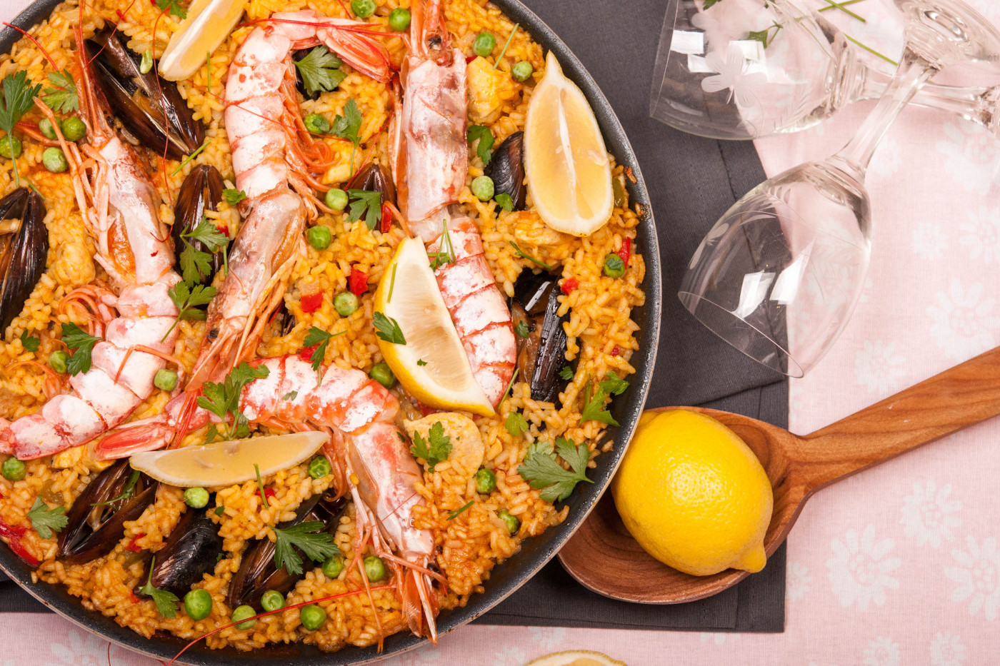

Рецептите за паеля са точно толкова на брой, колкото са и готвачите, които ги приготвят. Понякога рецептите комбинират морски дарове, чоризо и месо, от различен вид и различно количество. Рецептата за паеля на Супичка е един по-лек вариант за приготвяне на това любимо ястие от испанската кухня. Пищно като вкус, а също и като аромат и външен вид, паелята е ястие, което е подходящо за всеки повод, а и без повод. За да може да разчитате на категорично вкусен и качествен резултат, трябва да заложите на качествените съставки.
📖
Трудна
⏱️
60 мин.
🍴
8